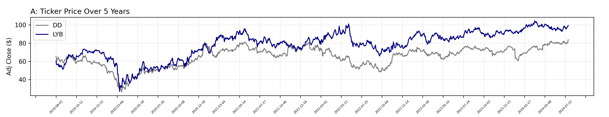
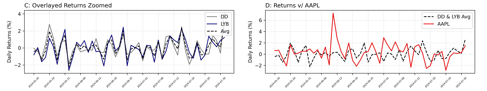
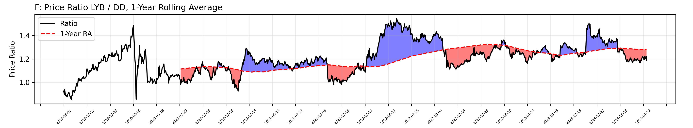
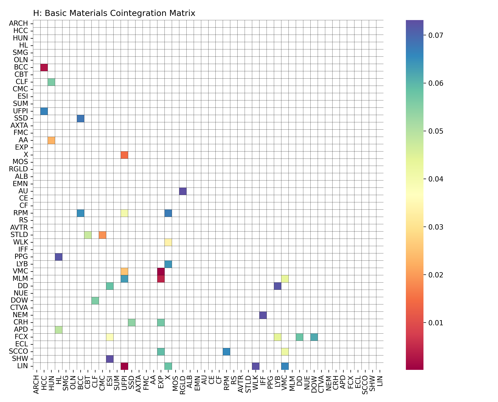
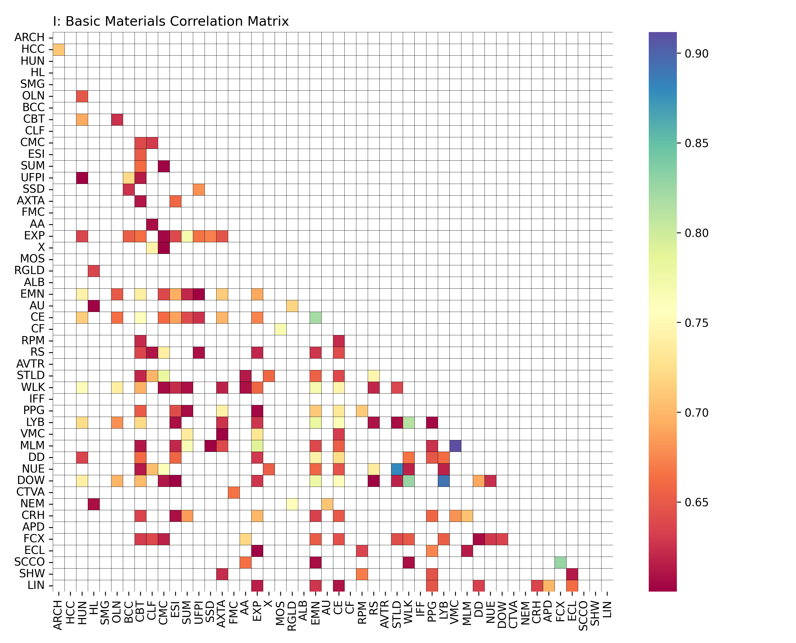

Statistical Arbitrage
Background
Predicting the performance or even the direction of individual stocks can be exceptionally challenging. Instead of focusing on a single stock, market traders can employ a pairs trading stategy. This strategy leverages two often strongly correlated companies or indices and works by exploiting lead-lag effects or mean regression. The underlying concept is that if two correlated stocks diverge, you can take a long position on the relative underperformer and a short position on the overperformer. Both stocks can go up or down and the return will be mostly neutral, but if the stocks revert to similar relative levels you will make money. As this method is only reliant on mean reversion, it can therefore be utilized regardless of overall market performance (market neutrality). The downside is present when the stocks maintain or increase their divergence, known as drift.
Pairs trading alone is very prevalent in current markets and is not risk-free. To better protect against risk, statistical arbitrage is a variant of pairs trading that captures a large number of stocks at once. Arbitrage alone is just the exploitation of differences in price between two markets to make a profit. Statistical arbitrage is a wholistic approach to diversify arbitrage opportunities across a wider space than a single pair - generally dozens or more stocks at once. Trading companies first find large groups of correlated stocks and assign weights to all of them. They then take positions in these factoring in complex risk models.
The following guide will take you through analyses in time series data with the purpose of making informed financial decisions using applied learning from statistical arbitrage. Content will be principally statistical, focused around correlation and cointegration of time series data while coding applications will pursue applications of web scraping to pull live data. Note to the readers that statistical arbitrage requires holding dozens or more positions simultaneously in opposite directions and making frequent adjustments - often on the order of day or hour scales. Maximizing returns further demands very small transaction fees. These constraints make statistical arbitrage very challenging for the retail investor and any commentary should not be taken as financial advice - I am an engineer not a financial analyst.
Pairs Trading: Specialty Chemicals
To start this exploration, consider DuPont de Nemours (DD) and LyondellBasell (LYB) - two massive chemical companies with industry dominance in specialty polymers.
In Figure A the adjusted closing price of DD and LYB are shown from August 1st 2019 to August 1 2024. This is a condensed view of all trading on these two companies over the past five years. While
thousands of intra-day movements could be displayed, considering a wide timescale like entire days is more digestible. There is limited benefit in higher resolution to a retail investor like myself who would not trade the same stock multiple times
in one day. Furthermore, very little information is lost with 252 data points per year (all weekdays excluding federal trading holidays).
From their stock price data alone, some obvious similarities are apparent. Both stocks have a noticeable dip during Covid emergence in early 2020 followed by almost identical resurgences through the end of 2021. The prices diverge slightly around early to mid 2022 but follow
a shared direction up to present date.
Figure B depicts their daily returns (%) offset by +/- 3%. This is a metric of how much the stock price increased or decreased relative to the day prior and is a very common method for quickly summarizing the daily performance of a stock with one number. At this scale the data is so variable the only consistency is inconsistency. Nevertheless, patterns are present even if the likeness in DD & LYB returns might be more challenging to notice. Instead, let's look at only the past 50 trading days:
Here the daily returns of each company is clearly quite similar. On 31/50 trading days DuPont and LyondellBasell demonstrate returns within 1% of each other. If we take the average from Figure C and overlay it on Apple's (AAPL) returns over those same 50 days, it is clear how different the two patterns are. Now on only 40% of days are the average of DD & LYB returns within 1% of AAPL's returns. Some shared returns are expected due to overall market trends, but generally the consumer tech market is moderately independent from specialty polymers.
Figures A, B, C, & D are all telling the same story: DuPont and LyondellBasell share an exceptionally similar market performance profile. There is a statical term for this: cointegration. Both DD & LYB are said to be stastically cointegrated (p = 0.04) meaning that there exists some a linear combination of them that is stationary while each compononent is non-stationary.
In partially incorrect but more understandable words, this is a fancy way of saying DD & LYB are correlated with each other over time.
Predicting whether either stock will go up or down is near impossible with only price information; however, it is not unreasonable to assume that if either DD or LYB
price increases or decreases, their counterpart will do the same. The challenge - how do we capitalize on this discovered pattern?
Some traders might exploit lag inefficiencies. In this case if one stock began rising rapidly they could predict the other would do the same and might buy the lagging stock. This practice
is only profitable if you have access to information before most of the market and are able to execute on these inefficiencies immediately. To do so requires being involved in high-frequency trading and paying
big bucks for specialized HFT platforms or software that can handle this workload. With hundreds or thousands of daily trades, commissions must be minimized and margins are still low. All of this is infeasible for a retail investor with a day job.
Since short term inefficiencies won't work for us, we must focus on longer time scales. If both of these stocks are non stationary (demonstrate trending over time), one easy combination of the two that may be non-stationary is their ratio. Inefficiencies in their price ratio is not limited to intra-day trading and could be a better
opportunity for us.
Indeed, a stationarity test of the ratio of LYB / DD yields p = 0.019, a clearly significant number at an alpha level of 0.05. The average ratio depicted with the red dashed line in Figure E is around 1.2. Over the past five years the ratio of LYB / DD crosses this average ratio dozens of times. Each time it crosses the red-line it is mean reverting. Therefore, our pairs trading strategy focused on arbitraging these two companies assuming mean reversion could work well here. However, if you take a closer look at Figure E you may notice that the ratio line prior to March 2022 is consistently under 1.2 whereas after March 2022 it seems to stay above 1.2 more often. Not only that, but this five-year ratio does not provide us an opportunity to make adjustments or trades given new information. Instead, let's look at the same ratio compared to the 1-year rolling average of the ratio.
With the rolling average ratio approach, the ratio presents more mean reversion events allowing us to capitalize on divergences with greater confidence. The longest period without mean reversion is shorter and we are less exposed to risk. As for creating a simple strategy framework using this approach, there are a few factors we want to consider. Let's first set an entrance and an exit condition. A good starting point for an entrance condition is whenever the current ratio is more than 2.5% away from the 1-year rolling average ratio. Then, we should obviously exit our position once the ratio has reverted to this rolling mean. As a safety, we will implement a very basic stop loss condition at multiples of our entrance condition. For example, a 10x stop loss condition means that with a 25% deviation in ratio from the rolling ratio we must exit our position and accept the current loss to prevent incurring greater losses. More sophisticated models will have far more complex entrance, exit, and stop loss criteria that may consider dozens of factors. These variables are highly tunable and experimenting should be done to select the best parameters for your portfolio and risk level.
For the purposes of this investigation, we should make a few assumptions. The first is that you have a very kind brokerage that charges no trading fees. This may actually be the case if you are a retail investor making very few monthly trades. Second, the model assumes no slippage. Slippage is when the bid price deviates between when the order is placed and when it is executed - effectively it can be very hard to actually buy X shares at Y price without Y changing very slightly in a short amount of time. Given these basic parameters and assumptions, we can look at our expected returns if we had implemented this strategy:

Plotted in Figure G are the expected returns had we placed our money in entirely DD, entirely LYB, or evenly split it by dollar value between the two. Additionally, the red, green, and cyan lines show how our strategy performs given various stop loss limits.
Notice that the highest risk level happened to produce the greatest returns. This is largely because there were limited diverging events over this time period. You can see in early May 2022 that the red trace with higher risk takes a larger loss than the green trace which exited the unfavorable position before the
red trace. However, the red trace regains its lead after it stays in a position until successful mean reversion around May 2024 instead of exiting prematurely like the green trace.
Another critical observation is that two of our strategies outperformed the best stock performer over this period (LYB) as well as the average of both stocks. However, had we waited to buy LYB for one year similar to the first trade we make with our strategy, LYB would net similar final returns.
So what is the point of doing all of this work if we might be better off just guessing one of the two stocks or investing in an overall market index fund? The benefit here is twofold. One is that this strategy outperforms the average of the two stocks meaning we are hedging against ourselves making an incorrect choice in investing in either LYB, DD, or both. Second and more importantly, one of the principal goals of a market-neutral strategy is that this system is hedged against the market. Therefore, if we invest part of our portfolio in the a general market index fund and part of our portfolio in a market neutral strategy, in the event of a downturn only the market index based component should see substantial losses. Thus, this strategy hedges both of the two selected stocks as well as overall market performance, working to effectively reducing overall portfolio risk.
Building a Portfolio
Consider now that you want to engage in pairs trading and statistical arbitrage in your personal portfolio. After allocating some percentage of funds to this strategy, how could you go about selecting stocks to long and short, and how might you distribute these funds across the various stocks to either maximize returns, minimize risk, or hedge entire sectors?
 Let's start by splitting the entire market into more digestible categories or sectors. Yahoo! Finance: Sectors provides a good overview of these different general industries. DD & LYB are both classified under the "Basic Materials" Sector, so we can select that link to learn more. Here we can see a table listing the largest companies in this sector sorted by market cap. Let's use Python to scrape the top 100 companies from this list. Then, we can set trading exclusion criteria to see which we can immediatley eliminate. For this analysis I have chosen to yield any stock with less than 30 million dollars of daily trading volume. The idea is that lower volume stocks may be more challenging to enter or exit positions, and there is both greater risk for slippage (liquidity risk) and less volume to work toward mean reversion (model risk). This reduces the basic materials sector to 50 possible stocks. Then, we can plot the cointegration ( Figure H ) and correlation ( Figure I ) for every possible combination. Only combinations with a cointegration less than 0.075 are shown, and only combinations with correlations greater than 0.6 are shown.
 Technically, cointegration values must be less than 0.05 to be statistically significant with an alpha level of 0.05, but we might want to see almost cointegrated stock pairs. This method demonstrates a large number of highly correlated stocks (by returns) as well as several cointegrated pairs exist within the Raw materials market. It is then up to the trader to further explore each pair in this sector to determine if any are viable for the strategy. Once this sector is complete, the trader may move onto other sectors for better diversification. Alternatively, as this is a market-neutral approach, they may consider one sector sufficient with adequate risk reduction measures. A common risk reduction method would be to split the available trading funds across all identified pairs of interest. Weighting for each pairing could be determined through a risk model to minimize exposure - many are commercial available (See MSCI/Barra Models) but may not be finanically viable for a retail investor.
Below are examples of some of these pairs, feel free to plot the rest as part of your own investigation. In Figure J the pair with the highest correlation is overlayed on the pair with the lowest correlation. The black dots of MLM:VMC overwhelming exist around the unity line meaning that generally MLM sees very similar daily returns to VMC. Conversely the blue dots of
AU:ESI have almost no obvious pattern and a bad day for one stock could be fantastic on the other.
In Figure K, LIN, UFPI, and VMC are all cointegrated with each other. Even at a cursory glance a number of similarities between the three traces are evident.